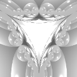
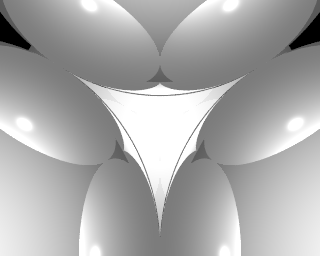
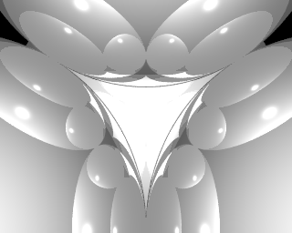
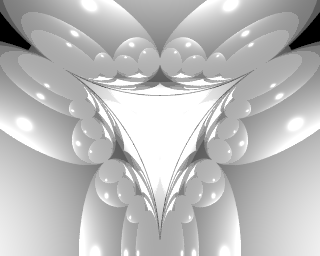
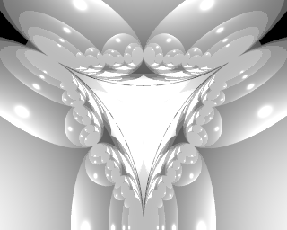
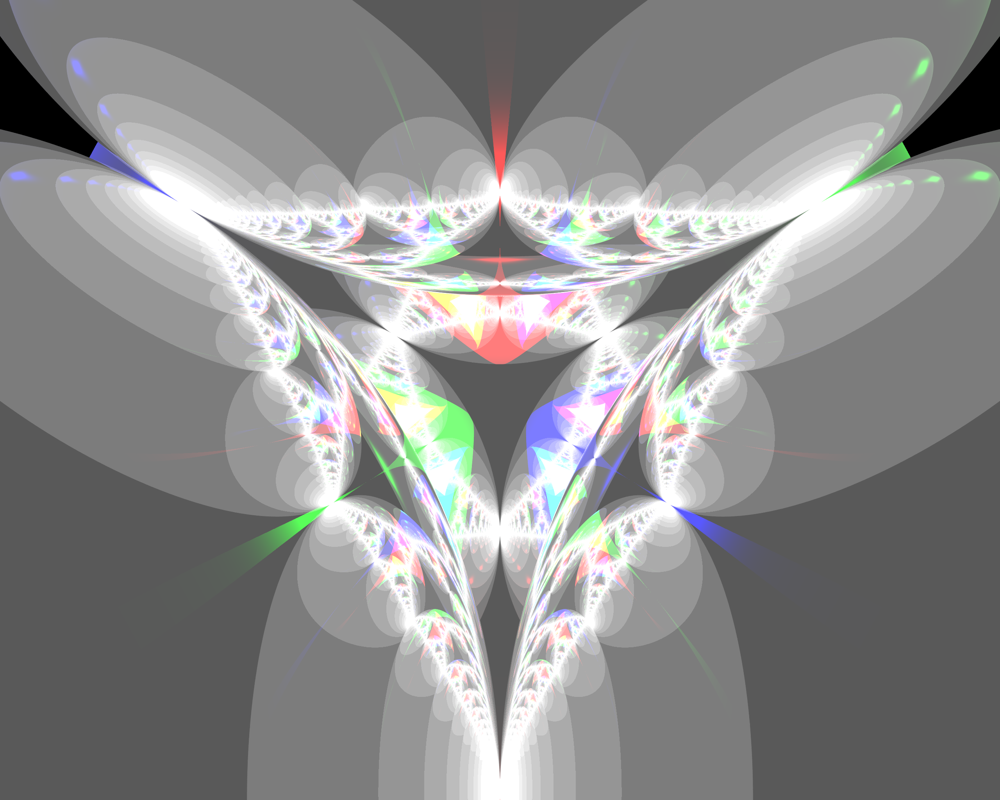
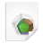

Fraktal zum Selberbauen

Es ist zwar schon zu spät für Weihnachten, aber da das Experiment Weihnachtsbaumkugeln benötigt ist es vllt. besser, es zu einer zeit durchzuführen, wenn die Kugeln nicht am Baum gebraucht werden...
Fraktale sind eine faszinierende Sache - manche finden bildliche Darstellungen davon sogar so hübsch, dass sie ihre Wohnungen damit ausgestalten. Im Zuge der Recherchen für neue Ideen im Bereich Chaotische Systeme stieß ich auf einen Artikel, in dem ein weihnachtliches Fraktal beschrieben wird, das ganz ohne Computer auskommt: Man nehme vier stark reflektierende Kugeln (Weihnachtsbaumkugeln) - idealerweise sind sie identisch. Dann halte und fixiere man sie so, dass sie ein Tetraeder bilden und jede Kugel die drei anderen berührt. Nun verdunkle man das Zimmer und benutze eine Lichtquelle um den Mittelpunkt des Tetraeders anzuleuchten. Anschließend ergötze man sich am Resultat.
Man kann dieses Experiment natürlich auch am Computer simulieren. Dazu benötigt man lediglich eine Software, die den Prozess des Raytracing beherrscht; Beispiele dafür sind Persistence of Vision oder Blender.
Allerdings existiert eine Einschränkung bei der Simulation dieses Prozesses im Computer (tatsächlich ist es eine weitere gemeinsamkeit mit Fraktalen): Raytracing folgt imaginären Strahlen von der Kamera aus in die Szene. Beim Auftreffen auf Hindernisse werden diese Strahlen entsprechend realer physikalischer Gesetze abgelenkt, gebrochen, reflektiert,... Dies geschieht so lange bis die strahlen auf eine Lichtquelle in der Szene treffen oder die maximale Anzahl bon Interaktionen mit Objekten in der Szene erreicht ist. In unserem Experiment entspricht diese Maximalzahl (die auch die für die Berechnung des resultierenden Bildes benötigte Rechenzeit beeinflusst) den vorgegebenen maximalen Iterationen zum Beispiel bei der Berechung des Mandelbrot-Fraktals oder Apfelmännchens.
Beim Raytracing kann man den Einfluss dieses Parameters bei unserem Experiment sehr gut erkennen: die folgenden Bilder setzen die maximale Grenze auf die Werte von 1 bis 5 (Wir schauen hier durch eine der Lücken zwischen jeweils drei der Kugeln auf den Mittelpunkt zwischen ihnen, die Szene enthält genau eine weiße Lichtquelle, die genau hinter der Kamera sitzt):
Weihnachtsbaumkugelfraktal berechnet mit PovRay, max_trace_level=1

Weihnachtsbaumkugelfraktal berechnet mit PovRay, max_trace_level=2

Weihnachtsbaumkugelfraktal berechnet mit PovRay, max_trace_level=3

Weihnachtsbaumkugelfraktal berechnet mit PovRay, max_trace_level=4

Weihnachtsbaumkugelfraktal berechnet mit PovRay, max_trace_level=5Wer sich auf die reflektionen der Kugeln konzentriert, kann sogar herausfinden, dass man mittels Abzählen der Reflektionen diesen Wert aus dem jeweiligen Bild bestimmen kann...
Zum Abschluss noch ein Bild, bei dem ich maximal 100 Interaktionen mit Szenenobjekten zugelassen habe und drei Lichtquellen benutze, von denen eine blau leuchtet, eine rot und eine grün - sie sind so angeordnet, dass sie jeweils durch eine andere Lücke strahlen. Die Dateien zum Nachstellen und selbst Experimentieren habe ich unten angehängt - benutzt werden sie ganz einfach per
povray wada.ini

Weihnachtsbaumkugelfraktal beleuchtet mit mehreren unterschiedlich farbigen Lichtquellen, berechnet mit PovRay, max_trace_level=100

- Lizenz
- PovRay Ini-Datei

- PovRay Szenenbeschreibung
Artikel, die hierher verlinken
Magnetisches Pendel
22.03.2020
da seit meinem letzten Artikel zum Thema Chaos und - im weiteren Sinne Fraktale - bereits einige Zeit vergangen ist hier noch ein Nachtrag aus den Untiefen meines Massenspeichers (Festplatte darf man ja heute nicht mehr sagen...)


Vor 5 Jahren hier im Blog
-
FX-Komponente als Java-Version
02.12.2016
Ich wurde wieder einmal bei einer meiner Inspirationsquellen fündig und versuchte, die dort vorgestellte Komponente mit Java-Mitteln nachzuvollziehen.
Weiterlesen...
Tags
Android Basteln C und C++ Chaos Datenbanken Docker dWb+ ESP Wifi Garten Geo Git(lab|hub) Go GUI Hardware Java Jupyter Komponenten Links Linux Markup Music Numerik PKI-X.509-CA Python QBrowser Rants Raspi Revisited Security Software-Test sQLshell TeleGrafana Verschiedenes Video Videos Virtualisierung Windows Upcoming...
Neueste Artikel
-
Deutsches Tastaturlayout für DigiSparkCustomKeyboard
Nachdem ich neulich über die Hardware und die Motivation dahinter berichtete wollte ich den Prototypen für ernsthafte Aufgaben umrüsten. Das erwies sich nicht als so einfach, wie ich gehofft hatte...
Weiterlesen... -
Generative Art: Mastodon-BitBot
Ich stieß auf meinen Streifzügen durch meine Bubble neulich wieder auf einen interessanten Bot und einen sehr interessanten Eintrag, den dieser gerade generiert hatte:
Weiterlesen... -
VC2HTML-Plugin
Wie bereits in einem früheren Artikel zum Thema sQLshell-Plugins wird hier wieder ein neues Plugin für die sQLshell vorgestellt, das eine neue Möglichkeit bietet Datenmodelle zu dokumentieren/analysieren.
Weiterlesen...
Manche nennen es Blog, manche Web-Seite - ich schreibe hier hin und wieder über meine Erlebnisse, Rückschläge und Erleuchtungen bei meinen Hobbies.
Wer daran teilhaben und eventuell sogar davon profitieren möchte, muß damit leben, daß ich hin und wieder kleine Ausflüge in Bereiche mache, die nichts mit IT, Administration oder Softwareentwicklung zu tun haben.
Ich wünsche allen Lesern viel Spaß und hin und wieder einen kleinen AHA!-Effekt...
PS: Meine öffentlichen GitHub-Repositories findet man hier.